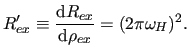

Next: The DPL94 2-site fast Up: The analytic R1 models Previous: The M61 2-site fast Contents Index
This is the second model for 2-site fast exchange for on-resonance
R1 -type data from Meiboom (1961).
It is selected by setting the model to `M61 skew'.
The equation for the exchange process is
-type data from Meiboom (1961).
It is selected by setting the model to `M61 skew'.
The equation for the exchange process is
|  | (theparentequation.60) |
Care must be taken as this model appears to have infinite lines of solutions -
pA and

 are convoluted.
Hence this model is disabled in the dispersion auto-analysis.
are convoluted.
Hence this model is disabled in the dispersion auto-analysis.
More information about the M61 skew model is available from:
The relax user manual (PDF), created 2014-02-04.